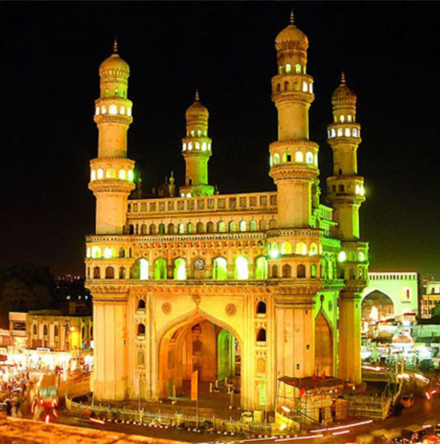
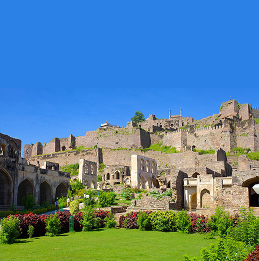
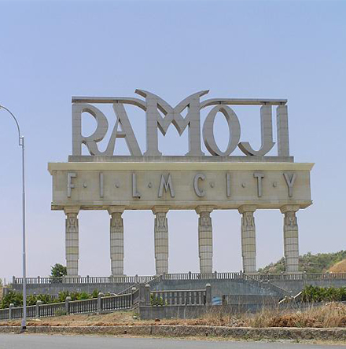
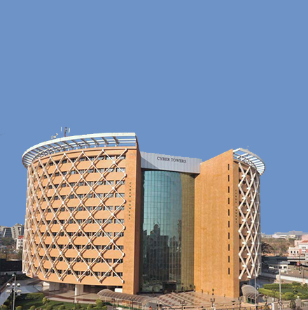
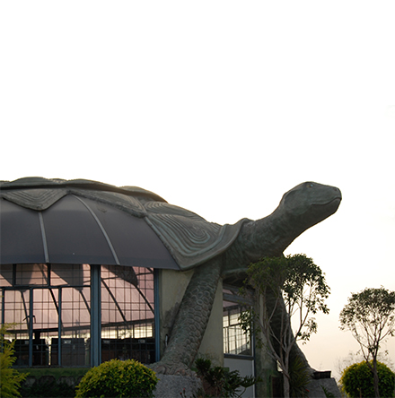
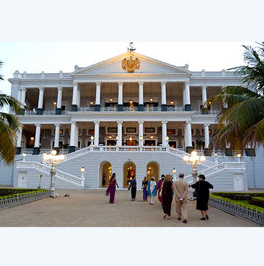
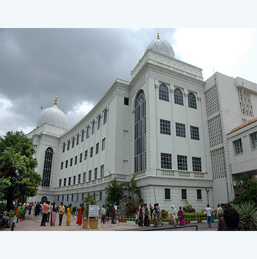
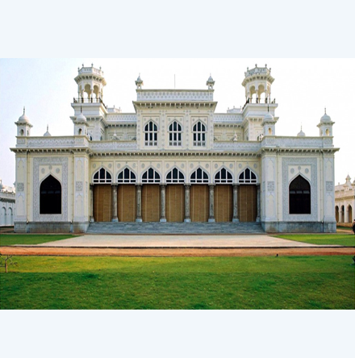
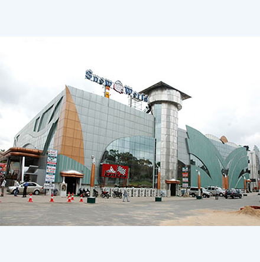
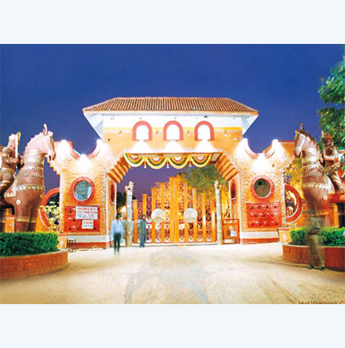

Charminar
The Charminar is as much the signature of Hyderabad as the Taj Mahal is of Agra or the Eiffel Tower is of Paris. Mohammed Quli Qutb Shah, the founder of Hyderabad, built Charminar in 1591 at the centre of the original city layout. It is said to be built as a charm to ward off a deadly epidemic raging at that time. Four graceful minarets soar to a height of 48.7 m above the ground. Charminar has 45 prayer spaces and a mosque in it. Visitors can view the architectural splendour inside the Charminar. The monument is illuminated in the evenings and a pedestrianisation project around the monument is under implementation.

Golconda Fort
Golconda is one of the famous forts of India. The name originates from the Telugu words "Golla Konda" meaning "Shepherd's Hill". The origins of the fort can be traced back to the Yadava dynasty of Deogiri and the Kakatiyas of Warangal. Golconda was originally a mud fort, which passed to the Bahmani dynasty and later to the Qutb Shahis, who held it from 1518 to 1687 A.D. The first three Qutb Shahi kings rebuilt Golconda, over a span of 62 years. The fort is famous for its acoustics, palaces, ingenious water supply system and the famous Fateh Rahben gun, one of the cannons used in the last siege of Golconda by Aurangzeb, to whom the fort ultimately fell. Sound & Light Show at Golconda Fort: The glorious past of Golconda Fort is narrated effectively with matchless Sound and Light effects. The unique Sound & Light Show takes you right back in time, when Golconda was full of life, glory and grandeur.

Ramoji Film City
Ramoji Film City is located around 20 km from Hyderabad in Rangareddi district. Spread over 2000 acres, it is a film-themed park combined with a studio, unabashedly modeled after Universal City.
The city opened in 1996. It was conceived and developed by Ramoji Rao, media and film baron, whose film production house Usha Kiron Movies is a major producer of Indian movies.
The city encompasses massive buildings, gardens and other sets suitable for filming movies. Fans of Indian movies will find many locations where scenes from their favourite movies were shot. Inside the city are complete facilities for pre-production, production and post-production work on movies. In addition, there are theme parks, rides and other attractions, opportunities for shopping and dining. There are three hotels inside the city catering to various budgets and travellers can easily spend a weekend or more with their families and not tire of the place.

Hitech City
The Hyderabad Information Technology and Engineering Consultancy City, abbreviated as HITEC City Telugu: is one of the leading Information Technology, Engineering, Health informatics, and Bioinformatics hubs of India situated in Hyderabad, India. HITEC City is spread across 200 acres (81 ha) of land under suburbs of Madhapur, Gachibowli, Kondapur, Manikonda, and Nanakramguda, the technology township is also known as Cyberabad. HITEC City is within two kilometers of the residential and commercial suburb of Jubilee Hills. HITEC City was commissioned initially with L&T ECC and was named L&T INFOCITY. The Project is being developed by Larsen and Toubro Limited through its Special Purpose Vehicle, L&T Hitech City Limited, a joint venture company of L&T Infocity Limited and Andhra Pradesh Industrial Infrastructure Corporation Limited. HITEC City has emerged as the symbolic heart of cosmopolitan Hyderabad.
The project is spread over 30 acres (12 ha) of land and was envisaged to develop 1,100,000 sq ft (100,000 m2). of IT space and 450,000 sq ft (42,000 m2). of residential space in a phased manner. The Project offers multitenanted as well as Built-to-suit (BTS) facilities. It is strategically located, and caters to all segments of the IT Industry including small & medium enterprises, with office areas starting from as small as 2,500 sq ft (230 m2). The first IT block, "MEDHA", was inaugurated by K. Rosaiah, then Chief Minister of Andhra Pradesh, on 28 January 2010.

Botanical Gardens
The Kotla Vijayabhaskara Reddy Botanical Garden is a botanical garden in Hyderabad.[1] It was developed by the Forests Department and is near the HITEC City, Madhapur, 16 kilometres (10 mi) from Hyderabad Railway station on the Hyderabad-Mumbai old Highway.
The botanical garden aims at providing the facility of a modern botanical garden to conserve and develop the germ plasm and to educate the people. The garden is spread over 120 acres (0.49 km2) of undulating land and, when completed, will have 19 sectors or 'Vanams'. The first phase is open to the public, with the completion of five sections. The sections include medicinal plants, timber trees, fruit trees, ornamental plants, aquatic plants, bamboos and so on. The park is designed to have large water bodies, rolling meadows, natural forests, rich grasslands and exquisite rock formations.
An eco-tourist destination, the botanical garden is in Madhapur, near the Hi-tech City, approximately 16 kilometers from Hyderabad. Tents are available for longer visits.
The bamboo and palm sectors are major attractions, with varieties of bamboo trees separated by a 3-metre (10 ft) distance. Special signboards are erected at each bamboo variety indicating its generic and scientific names. The palm sector has diverse species. Here you can find a variety of flowers in abundance, such as yellow and purple cosmos, blue salvia, red raselia, etc.

Falaknuma Palace
The palace is spread out in a scorpion shape with two pincers spread out as wings on the north. The middle part occupies the main building. The Harem quarters and the kitchen stretch towards the south. The palace was designed by an Italian architect in western style, and took 9 years for construction, and is completely built with Italian Marble. The foundation stone was laid on 3rd March 1884. Falaknuma houses a collection of rare treasures collected by the Nizam including paintings, furniture and statues. The Jade collection of the Palace is unique in the world. The palace also has a library containing most valuable collection of books and manuscripts. The Palace also has the distinction of having a 100-seat dining table. The Palace is now converted into a heritage hotel by the Taj Hotels group.

Salar Jung Musuem
Housing the largest one-man collection of antiques in the world, the Salar Jung Museum encompasses global artefacts dating back centuries. The Museum was established in 1951. Situated on the southern bank of the river Musi, the Salar Jung Museum is not far from the other important monuments of the old city. Salar Jung Museum is a repository of the artistic achievements of diverse European, Asian and Far Eastern countries of the world. The major portion of this collection was acquired by Nawab Mir Yousuf Ali Khan popularly known as Salar Jung III. The zeal for acquiring art objects continued as a family tradition for three generations of Salar Jungs.

Chowmahalla Palace
Chowmahalla Palace is located near to the Charminar. It comprises of four palaces. The Asif Jahi dynasty made this palace as their seat. The official guests as well as royal visitors were entertained here. The heart of the Chowmahalla Palace is called Khilwat Mubarak, and houses the Clock Tower, Council Hall and Roshan Bungalow. Roshan Bungalow was named after the sixth Nizam�s mother, Roshan Begum. The palace was restored and opened to public in January 2005. After five years of documentation and restoration work, the first courtyard regained its former glory. The chowmahalla palace is closed on friday.

Snow World
Snow World is one of the most unique, intriguing and captivating attractions in the entire city of Hyderabad. This creative destination is a beloved favourite among all visitors, and offers a splendid opportunity and experience to all. With the warm, summer atmosphere of Hyderabad, no one would expect to stumble across an amusement park that allows it to snow! As the biggest snow park in the entire world, this is truly a great place to capture memories with. Enjoy the pleasures of tobogganing, skating and snow ball fights all arranged here at Snow World in Hyderabad.

Shilparamam
Another attraction at Madhapur besides Hi-tec city in Hyderabad is the 30-acre village, which showcases arts and crafts of the country. India is an ocean of various arts and crafts but the talent of most of the artisans and artists goes unrecognized. To encourage them and give the necessary boost to their art, the crafts village hosts annual bazaars, where artists and artisans from all over the country exhibit their talent.
Conference Secretariat

Dr. P. Vijay Anand Reddy
DIRECTOR, Apollo Cancer Institutes, Apollo Hospitals,
Jubilee Hills, Hyderabad, T.S., INDIA 500 096
Tel: +91-40-2360 7777 Ext: 3333
Direct: +91-40-2355 6357
Email: contact@cancerci.org
Conference Manager
Mr. Rajesh Sharma
A-1108, Siddhi Vinayak Tower, Off SG Highway,
Makarba, Ahmedabad 380051 Gujarat.
Email: narayan@miceideas.in
Website : www.miceideas.in
2020 © All Rights Reserved.